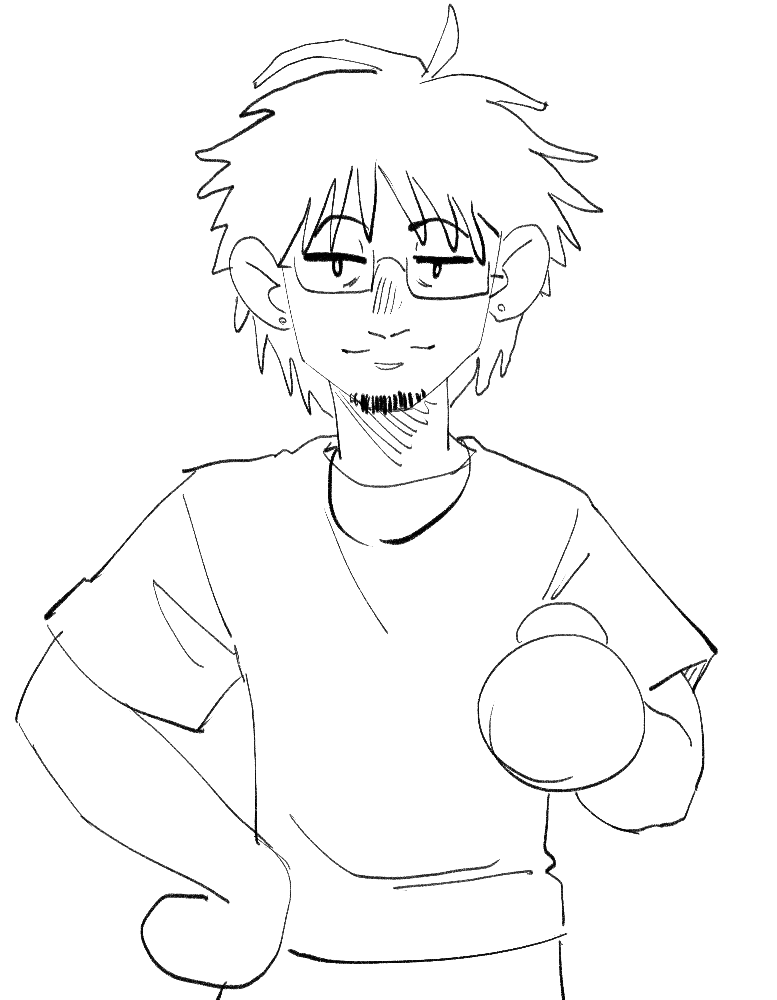

About Me
Hi, my name is Kairos, and I'm a digital illustrator.
I'm 19 years old and I've been drawing for as long as I can remember. Bringing my imagination to life through art is one of my greatest passions.
I've never worked professionally in the digital art field, but I don't rule out the idea. This portfolio is a step in that direction — and also a personal keepsake book, filled with drawings (some made with more care than others), but all part of my journey and growth.
- Self-taught digital artist
- Portfolio as both showcase and diary
- Always learning and evolving